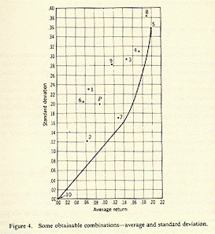
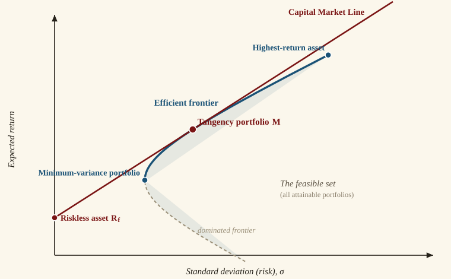

Chapter II
The Geography of the Efficient Frontier
Portfolio diversification, the Markowitz model, and the Capital Market Line.
I. The Risk and Return of Securities
Markowitz's fundamental contribution was recognizing that three measures summarize all the information needed about securities for portfolio selection: the mean return (arithmetic mean), the standard deviation of returns, and the correlation with other assets' returns.
Using historical data from 1970 through March 1995, a comparative analysis of six asset classes demonstrates the challenge investors face. Asset classes examined include Small Stocks, S&P stocks, Corporate and Government Bonds, T-Bills, and the MSCI World Portfolio.
Small stocks provide the highest return, but with the highest risk.
No single asset class dominates all others. T-Bills appeal to risk-averse investors, while small stocks attract those unconcerned with volatility. No universal "best" security exists for all investors.
We can picture any security as a single point in risk–return space. By convention we put the risk — the standard deviation of returns — on the horizontal axis and the expected return on the vertical axis, both annualized. Scatter a handful of securities this way and the investor's dilemma becomes visual.
Figure 2.1. Six hypothetical securities, each a point set by its standard deviation (horizontal) and expected return (vertical), annualized. Which one would you choose? Is any of them dominant — offering both a higher return and a lower risk than all the others? The lowest-risk security is highlighted in light blue and the highest-return one in bright green. Usually they are different securities, so no single one dominates — which is exactly why we combine them. Press Regenerate for a new draw.
Key Concept
No single asset class is universally "best." The optimal choice depends on the investor's willingness to bear risk — which leads naturally to the idea of combining assets into portfolios.
II. Portfolios of Assets
Rather than selecting one asset, investors typically construct diversified portfolios. The correlation coefficient — ranging from $-1$ to $+1$ — measures co-movement between stock returns:
Correlation Coefficient
$$\rho_{AB} = \frac{\sigma_{AB}}{\sigma_A \cdot \sigma_B}$$where $\sigma_{AB}$ represents the covariance between securities A and B.
The portfolio standard deviation for two assets is:
Two-Asset Portfolio Standard Deviation
$$\sigma_p = \sqrt{w_A^2 \sigma_A^2 + w_B^2 \sigma_B^2 + 2\, w_A\, w_B\, \rho_{AB}\, \sigma_A\, \sigma_B}$$And the portfolio mean return is simply the weighted average:
Portfolio Expected Return
$$\bar{R}_p = w_A \bar{R}_A + w_B \bar{R}_B$$Correlation Scenarios
Consider Security A with $\bar{R}_A = 10\%$, $\sigma_A = 15\%$ and Security B with $\bar{R}_B = 20\%$, $\sigma_B = 30\%$. A portfolio of 80% A and 20% B yields very different risk depending on correlation:
When $\rho = 0$ (uncorrelated):
Adding the riskier security actually reduces portfolio volatility from 15% to 13.4% — demonstrating the power of diversification.
When $\rho = +1$ (perfect positive correlation):
No diversification benefit exists since assets move in lockstep.
When $\rho = -1$ (perfect negative correlation):
A mixture of 66.5% Security A and 33.5% Security B produces approximately zero standard deviation — a nearly perfect hedge. This scenario rarely occurs in practice except with offsetting long and short positions.
Figure 2.2. Two assets in risk–return space — A ($\bar{R}=10\%$, $\sigma=15\%$) and B ($\bar{R}=20\%$, $\sigma=30\%$) — and every portfolio you can build from them. Drag the correlation. At $\rho = +1$ the opportunity set is the straight dashed line, with no diversification. As $\rho$ falls, the curve bows left of that line: the same two assets now offer less risk for the same return. At $\rho = -1$ they combine into a nearly riskless portfolio. The minimum-variance portfolio is marked; the solid blue arc above it is efficient, the dashed arc below it is dominated.
Key Concept: Diversification
When correlation is less than +1, combining assets reduces portfolio risk below the weighted average of individual risks. The lower the correlation, the greater the diversification benefit. This is the mathematical foundation of the old adage: "don't put all your eggs in one basket."

Figure 2.3. Correlation matrix for major U.S. asset classes, computed from SBBI data. Lower correlations (cooler colors) indicate greater diversification potential when assets are combined in a portfolio.
III. More Securities and More Diversification
Examining portfolios with multiple securities — all having zero correlation and identical risk — reveals significant diversification benefits. An equally-weighted portfolio progressively improves as more securities are added.
Figure 2.4. How portfolio risk falls as holdings are added, for equally-weighted assets each with 20% volatility. Set the average correlation between them. When it is zero, risk falls as $20\%/\sqrt{n}$ toward zero. When it is positive, the fall stops at a floor of $20\%\cdot\sqrt{\bar{\rho}}$ — the systematic risk that no amount of diversification removes. Most of the benefit arrives in the first 20–30 names.
After 30 stocks, diversification is mostly achieved. There are enormous gains to diversification beyond one or two stocks.
When allowing variable portfolio weights rather than equal weighting, benefits increase further. Calculating standard deviations across all possible asset combinations reveals a dominant set: the efficient frontier.
The efficient frontier represents portfolios offering the maximum return for each risk level and minimum risk for each return level. The frontier extends from the maximum return portfolio (typically a single asset) to the minimum variance portfolio.
Geographic perspective: The feasible set encompasses all possible asset combinations. The efficient frontier forms its northwest boundary — no portfolios exist beyond this edge.

Figure 2.5. The Markowitz efficient frontier, computed from SBBI asset class data. The bold curve represents the efficient frontier — no portfolio exists to the northwest. Interior points are dominated: for any given risk level, a higher-returning portfolio exists on the frontier.
IV. Markowitz and the First Efficient Frontier
Harry Markowitz created the first efficient frontier using NYSE stocks, published in Portfolio Selection (Cowles Monograph 16, Yale University Press, 1959). His frontier included a line extending to the origin, incorporating combinations of risky assets with riskless assets (cash). The original diagram positioned standard deviation on the vertical axis — a convention later reversed. The frontier itself drew its statistical inputs from just ten stocks on the New York Stock Exchange; adding more assets to the optimization pushed the limits of the computing power available at the time.

Figure 2.6. Markowitz’s original efficient frontier, reproduced from Portfolio Selection (1959) (left), beside the same picture in the modern convention (right). Markowitz drew standard deviation on the vertical axis and expected return on the horizontal, with a straight line running to the origin that mixes the risky portfolio with the riskless asset. Swap the axes — standard deviation on the horizontal, expected return on the vertical — and his diagram becomes the efficient frontier used throughout this chapter: a bowed curve of risky portfolios (dominated portfolios dashed below), with the straight capital allocation line from the riskless rate tangent to it. Same economics, transposed axes.
V. A Simulated Portfolio with Short-Sales Constraints
It helps to build a frontier by brute force rather than by formula. The simulation below draws thousands of random portfolios of four hypothetical assets and lets the efficient frontier emerge as the outer edge of the resulting cloud.
A short position in a security creates a negative weight on it in the portfolio — the investor sells borrowed shares and puts the proceeds into something else. This can greatly expand the investment opportunity set: with short sales allowed, weights are no longer confined between zero and one, and the feasible set opens up in every direction. The smooth hyperbolic shape of the classic efficient frontier is a result of allowing portfolios with short sales.
The simulation, by contrast, imposes a no-short-sales (positivity) constraint: every weight is non-negative and the weights sum to one. Several things follow, all visible in the figure below:
- The feasible set is bounded. Every attainable portfolio lies inside the envelope traced by the pairwise mixes (the grey arcs); nothing outside it can be reached without shorting.
- The long-only frontier is piecewise — stitched together from segments, and at each junction (a corner portfolio) an asset enters or leaves the optimal mix.
- The highest-return portfolio is a single asset, the highest-returning one (D). Without shorting, nothing can push return above it.
- The minimum-variance portfolio can still sit far to the left of every individual asset. Even when the assets are on average uncorrelated, combining them drives risk well below any one of them — the essence of diversification.
- The gap between the solid (long-only) frontier and the dashed (unconstrained) hyperbola is the value of being able to short. It is widest at the extremes — very high or very low target returns — and often nearly zero in the middle, where the optimum needs no short position.
Use the slider to set the average correlation among the assets, then press Regenerate to draw a new random correlation matrix centered on that average. As the average rises toward one, the feasible set collapses toward a line and diversification vanishes; as it falls toward zero, the frontier bows sharply to the left.
Figure 2.7. Four hypothetical assets, A–D, with fixed expected returns (6, 9, 11, 14%) and standard deviations (8, 13, 17, 20%). Each draw uses a fresh random correlation matrix centered on the average correlation you choose with the slider (the realized matrix and its average ρ appear below the chart). The blue cloud is 1,400 random long-only portfolios; grey arcs oversample the six pairwise mixes; the solid red curve is the long-only efficient frontier. The dashed curve is the unconstrained frontier (short sales allowed) — a smooth hyperbola. Notice how the no-short (positivity) constraint cuts the hyperbola off: the long-only frontier hugs it in the middle but cannot follow it past the extreme assets. Press Regenerate for a new correlation structure.
VI. The Efficient Frontier with the Riskless Asset
Treasury Bills typically represent the riskless asset, with return designated $R_f$, the risk-free rate. Since riskless assets have zero correlation with other securities, they provide no diversification per se but enable low-risk portfolio construction.
When combining all risky economy assets with the riskless asset, the efficient frontier transforms into a straight line — the Capital Market Line (CML) — extending from $R_f$ to tangency point $M$ on the risky-asset frontier, and beyond.
Capital Market Line
$$\bar{R}_p = R_f + \left(\frac{\bar{R}_M - R_f}{\sigma_M}\right) \sigma_p$$Portfolios between $R_f$ and $M$ combine Treasury bills with portfolio $M$. Portfolios extending beyond $M$ are achieved by borrowing at $R_f$ and investing proceeds into $M$ — a leveraged position.

Figure 2.8. The anatomy of the efficient frontier. The shaded region is the feasible set of attainable portfolios; its upper-left edge is the efficient frontier (bold), and its lower edge holds the dominated portfolios. The minimum-variance portfolio sits at the leftmost point and the highest-return asset at the top. Adding the riskless asset $R_f$ and drawing the tangent line yields the Capital Market Line, which touches the frontier at the tangency portfolio $M$. Investors hold combinations of $R_f$ and $M$ along this line — lending below $M$, borrowing above it.
Key Concept: Capital Market Line
When a riskless asset exists, the efficient frontier becomes a straight line (the CML) from $R_f$ through the tangency portfolio $M$. Every investor — regardless of risk preferences — holds the same portfolio of risky assets ($M$), differing only in how much they allocate to the riskless asset. This is the foundation of the Two Fund Separation Theorem.
The Tangency Portfolio, Out of Sample
There is a catch hiding inside the elegant geometry. To locate the tangency portfolio $M$ we needed three sets of inputs — expected returns, standard deviations, and correlations. In the classroom we treat these as known. In practice we must estimate them from historical data, and the estimates contain error. The tangency portfolio is the single point on the frontier that leans hardest on those estimates, so it is precisely where estimation error does the most damage.
The demonstration below makes the point with real data. We split the 1926–2025 SBBI history into an estimation window (everything up to the split year) and a holdout (everything after). From the estimation window we compute the max-Sharpe (tangency) portfolio — the portfolio that looked optimal looking backward. Then we plot where that portfolio actually landed in the holdout period, against the holdout’s own ex-post efficient frontier — the best that could have been done looking forward.
Figure 2.9. In-sample versus out-of-sample. The bold curve is the holdout period’s ex-post efficient frontier — the frontier hindsight would have drawn. The large ★ star is the tangency portfolio estimated from the earlier window, plotted at the risk and return it actually produced in the holdout. Because it is a feasible holdout portfolio, it lies on or inside this frontier — it cannot beat what hindsight made achievable, and only occasionally sits right on it. The faint stars repeat the calculation on 30 bootstrap resamples of the estimation window — each a portfolio that looked optimal on slightly different data; they scatter along and inside the frontier. The ◆ diamond is the ex-post tangency (hindsight’s best). Note that the holdout may yield higher returns than the estimation window predicted — the market does its own thing out of sample — yet the in-sample weights still leave Sharpe on the table, because the estimation error lies in the portfolio mix, not in the market’s overall level. Drag the split year, or resample, to watch the gap persist.
VII. Summary
All the information needed to choose the best portfolio for any given level of risk is contained in three simple statistics: mean, standard deviation and correlation.
Markowitz fundamentally revolutionized portfolio selection through elegant simplicity. His approach requires no fundamental firm analysis — dividend policy, earnings, market share, management quality — eliminating information typically central to Wall Street analysis.
Today, virtually all major portfolio managers employ optimization programs, though not always following exact recommendations. These tools evaluate fundamental risk-return trade-offs.
Practical Limitations
- Historical mean returns may poorly predict future returns
- As security count increases, correlation estimation becomes increasingly challenging and error-prone
- With over 1,500 NYSE stocks, some correlations will be substantially inaccurate
- The model proves sensitive to input errors
Optimal application: Markowitz optimization performs best with asset class allocation decisions, where correlation counts remain low and summary statistics are reliably estimated.